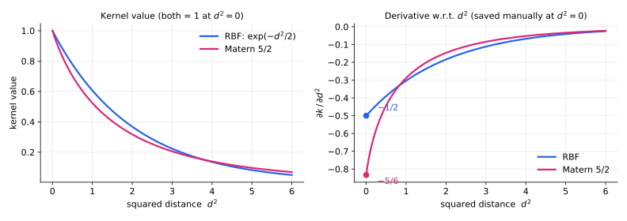
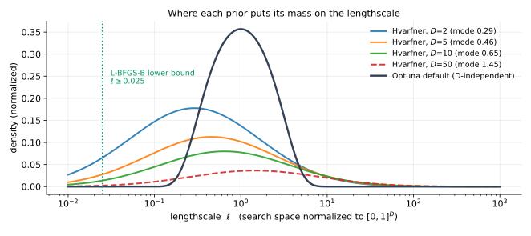

2026-08-03-rbf-hvarfner-priorBoth TODO(claude) markers in optuna/_gp/gp.py are resolved. Delivered:
RBFKernel implemented (was a raise stub).bounds=, not by assert.hvarfner_log_prior + HVARFNER_KERNEL_PARAM_BOUNDS added to optuna/_gp/prior.py.kernel_type + kernel_param_bounds threaded through GPSampler.f0c7c188a "Add essentials" scaffolding commit fixed.Patch: /Users/shuhei.watanabe/private/optuna/2026-08-03-rbf-hvarfner-prior.patch (27.6 kB,
verified with git apply --check against f0c7c188a).
Worktree kept: .claude/worktrees/2026-08-03-rbf-hvarfner-prior.
Diffstat: 5 files changed, 355 insertions, 19 deletions. Changed lines per file —
optuna/_gp/gp.py 112, optuna/_gp/prior.py 61,
optuna/samplers/_gp/sampler.py 6, tests/gp_tests/test_gp.py 194,
tests/gp_tests/test_acqf.py 1.
context.md has not been run. The only numbers in this memo come
from a 30-trial smoke test on a toy quadratic, whose sole purpose was to confirm all four arms
execute and the constraints hold. Do not read them as evidence about kernel or prior quality.
Benchmark GPSampler over {RBF, Matern 5/2} x {Optuna heuristic prior, Hvarfner prior}, because Hvarfner et al. (2023), "Vanilla Bayesian Optimization Performs Great in High Dimensions", report RBF beating Matern 5/2 under their prior. All four cells are now runnable.
What makes the Hvarfner prior principled rather than tuned: its log-normal mode on the
lengthscale scales as sqrt(2) + 0.5*log(D), i.e. it grows with dimension,
counteracting the concentration of pairwise distances in high D. Optuna's default prior has no
D dependence.
kernel_scale is fixed to 1.0 under the Hvarfner priorYour snippet's comment said "kernel_scale: not used (fixed to 1.0 in Hvarfner prior)". Two
readings: (i) literally fixed, (ii) merely unpenalized by the prior while MLL still fits it.
I implemented (i) via kernel_scale=(1.0, 1.0) in
HVARFNER_KERNEL_PARAM_BOUNDS, which the L-BFGS-B bounds enforce exactly.
Defensible because Optuna standardizes y. To switch to (ii), change that one
field to (0.0, math.inf) in optuna/_gp/prior.py. This materially
changes benchmark results, so decide before the sweep.
noise_var lower bound rides on minimum_noise, not on a raw L-BFGS-B boundYour rule said the constraints must be handled by L-BFGS-B rather than by assertion. The
lengthscale and kernel_scale constraints are genuine bounds=
entries. noise_var is different: the parametrization is
noise_var = minimum_noise + exp(raw), so a lower bound at exactly 1e-4 would
need log(0) = -inf as the raw bound. Instead _fit_kernel_params
raises minimum_noise = max(minimum_noise, kernel_param_bounds.noise_var[0]),
which enforces the bound by construction. Extra payoff: with
deterministic_objective=True the noise is pinned to minimum_noise,
so a pure raw bound would have silently violated the 1e-4 floor; this version does not. No
assertion is involved on any optimizer iterate. A config-time assert does fire if a
noise_var upper bound is <= minimum_noise, since the
parametrization cannot represent it.
_log_prior and _kernel_param_bounds are two separate sampler attributes, deliberatelyBundling them into one object would have changed the
log_prior: Callable[[GPRegressor], Tensor] type at every call site including
optuna/terminator/improvement/emmr.py and .../evaluator.py, which
is too invasive for a prototyping hook. The pairing requirement is a NOTE
comment at optuna/samplers/_gp/sampler.py:248. A style reviewer flagged the
lack of enforcement; worth revisiting if this becomes a real PR.
hvarfner_log_prior is evaluated on the natural lengthscale while L-BFGS-B
optimizes log(inverse_squared_lengthscales). Strictly, a change-of-variables
MAP would add a log-Jacobian term. Omitted, because both GPyTorch (which evaluates priors on
the constrained value) and Optuna's existing default_log_prior (Gamma on
kernel_scale while optimizing its log) do the same. So the four benchmark arms
stay mutually consistent. Recording it because it is a real, deliberate approximation.
fit_kernel_params raised NameError on every callIn _default_gpr() the scaffolding passed
kernel_type=KernelChoiceType — the type alias itself, not a value. The alias is
defined only under if TYPE_CHECKING:, so at runtime the name does not exist.
_default_gpr() is called unconditionally at the top of
fit_kernel_params, so this was not a latent edge case. Fixed to
kernel_type=kernel_type.
kernel_typeThe scaffolding added the argument to the constraints GP fit only. The fit at
optuna/samplers/_gp/sampler.py:443 — the one that drives single- and
multi-objective sampling — omitted it, so it silently used the "matern" default.
The whole RBF arm of the benchmark would have been Matern 5/2 with an RBF label. Both this
and kernel_param_bounds are now passed at both call sites.
Code as delivered, optuna/_gp/gp.py:153:
class RBFKernel(torch.autograd.Function):
@staticmethod
def forward(ctx: Any, squared_distance: torch.Tensor) -> torch.Tensor:
val = torch.exp(-0.5 * squared_distance)
ctx.save_for_backward(-0.5 * val)
return val
@staticmethod
def backward(ctx: Any, grad: torch.Tensor) -> torch.Tensor:
(deriv,) = ctx.saved_tensors
return deriv * gradexp(-0.5 * d^2), the GPyTorch/BoTorch convention, so
squared_distance = r^2 means the same thing it already means for
Matern52Kernel (whose sqrt5d = sqrt(5 * squared_distance) implies
r^2 too). Lengthscales therefore remain comparable across the two benchmark
arms.torch.autograd.Function at all is mechanical, not
numerical: kernel() dispatches through self._kernel_cls.apply(sqdist),
so the class has to expose .apply to be swappable with Matern52Kernel.
Unlike Matern 5/2, RBF needs no manual derivative for correctness — exp is smooth
at 0 — but saving -0.5 * val keeps the two classes symmetric.
d^2 (right),
with the values at d^2 = 0 marked. The right panel is why
Matern52Kernel saves its
derivative manually. Matern's sqrt(5*d^2) has unbounded slope as
d^2 -> 0, so PyTorch autodiff yields nan there, while the true
derivative is -5/6. RBF's is -1/2 and needs no such care. Both
kernels equal 1 at d^2 = 0, which is why kernel(x, x) = kernel_scale
still holds.
The problem: your draft snippet used
assert torch.all(lengthscales >= 2.5e-2) and torch.all(noise_var >= 1e-4). The
Hvarfner prior is only defined on that truncated domain, so the optimizer must never propose
points outside it.
New: prior.KernelParamBounds, a frozen dataclass of (min, max) pairs
on the natural parameters (lengthscale, kernel_scale,
noise_var), with (0.0, inf) meaning unconstrained and
__post_init__ asserting 0 <= min <= max.
gp._get_raw_param_bounds converts to the raw log space that L-BFGS-B actually
searches, and the result goes to
scipy.optimize.minimize(..., method="l-bfgs-b", bounds=scipy.optimize.Bounds(lo, hi)).
| natural param | raw param optimized | raw lower | raw upper |
|---|---|---|---|
lengthscale in [a, b] |
log(inverse_squared_lengthscales) |
-2*log(b) |
-2*log(a) |
kernel_scale in [a, b] |
log(kernel_scale) |
log(a) |
log(b) |
noise_var in [a, b] |
log(noise_var - minimum_noise) |
-inf (see 3.2) |
log(b - minimum_noise) |
Note the ends swap for the lengthscale:
inverse_squared_lengthscales = lengthscale**-2 is monotonically decreasing, so the
lengthscale's upper bound becomes the raw lower bound. A sign/end error here
would be silent — it would just constrain the wrong direction — which is why there is a
dedicated test_get_raw_param_bounds plus two fitting tests that check the natural
parameters land in range without reusing the conversion formula.
_log_or_inf handles the domain ends (log(0) = -inf,
log(inf) = inf) that math.log rejects.np.clipped into the bounds, so a gpr_cache
fitted under looser bounds (e.g. you switch prior mid-study) stays feasible.HVARFNER_KERNEL_PARAM_BOUNDS = KernelParamBounds(lengthscale=(2.5e-2, inf),
kernel_scale=(1.0, 1.0), noise_var=(1e-4, inf)).Code as delivered, optuna/_gp/prior.py:
def hvarfner_log_prior(gpr: gp.GPRegressor) -> torch.Tensor:
lengthscales = torch.rsqrt(gpr.inverse_squared_lengthscales)
mu = math.sqrt(2.0) + 0.5 * math.log(lengthscales.shape[-1])
return _log_lognormal_prior(lengthscales, mu=mu, var=3.0).sum() + _log_lognormal_prior(
gpr.noise_var, mu=-4.0, var=1.0
)lengthscales as an argument; the codebase's prior signature
is Callable[[GPRegressor], Tensor], so it now derives them via
torch.rsqrt(gpr.inverse_squared_lengthscales). rsqrt on the live
tensor keeps the autograd path to the raw parameters intact — gpr.length_scales
(the existing property) would NOT work here, because it returns a detached NumPy array.assert from your snippet is gone; that domain is now the L-BFGS-B box
(Section 6)._log_lognormal_prior is your function verbatim, omitting constants.
var=3.0 in log space makes
Hvarfner far broader / weaker than Optuna's sharply peaked default, so MLL has more freedom
under it. Densities are numerically normalized over the plotted range for comparability,
since both priors are implemented up to a constant.
Fills the sampler._log_prior = ... # TODO line in your context.md script:
from optuna._gp import prior
sampler = optuna.samplers.GPSampler(seed=seed)
sampler._kernel_type = trial.suggest_categorical("kernel_type", ["rbf", "matern"])
if prior_type == "hvarfner":
sampler._log_prior = prior.hvarfner_log_prior
sampler._kernel_param_bounds = prior.HVARFNER_KERNEL_PARAM_BOUNDS
# prior_type == "optuna" needs no change; the defaults are
# prior.default_log_prior + prior.DEFAULT_KERNEL_PARAM_BOUNDS.ruff check . and ruff format . --check: clean.mypy .: only 2 errors, both pre-existing on f0c7c188a and
unrelated (optuna/storages/journal/_redis.py:96,
optuna/visualization/matplotlib/_rank.py:106). Confirmed pre-existing by
re-running mypy on a stashed tree.pytest tests/gp_tests/ tests/samplers_tests/test_gp.py: 358 passed, 1 skipped.tests/gp_tests/test_gp.py (+194 lines)test_kernel_value_and_derivative_w_r_t_squared_distance — both kernels' value
AND their backward gradient compared against an independent reference formula's
autodiff, for d^2 in {1e-8, 0.1, 1, 10}. This is how the manual derivative is
verified.test_kernel_value_and_derivative_at_zero_squared_distance — the
d^2 = 0 limit separately, against the analytic -1/2 (RBF) and
-5/6 (Matern), because the naive reference is nan there. Worth
noting: my first draft folded d^2 = 0 into the reference comparison and the
Matern case failed on nan — exactly the condition the manual derivative exists
to handle.test_kernel_matrix_is_positive_definite — both kernels; also pins
kernel(x, x) == kernel_scale.test_get_raw_param_bounds — the conversion, incl. infinite ends and the
lengthscale flip.test_fit_kernel_params_respects_hvarfner_bounds — post-fit natural params
inside the box, both kernels, both deterministic_objective values.test_fit_kernel_params_with_fixed_bounds — min == max pins
lengthscale and kernel_scale even when the loss gradient pushes outside, i.e. L-BFGS-B really
is honoring bounds=.test_hvarfner_log_prior_peaks_at_the_mode — density ordering around
exp(mu - var).test_fit_kernel_params, test_posterior,
test_append_running_data, test_conditional_gpr_matches_joint are now
parametrized over ["matern", "rbf"].API compatibility note (matters for upstreaming): fit_kernel_params
keeps kernel_type="matern" and now
kernel_param_bounds=DEFAULT_KERNEL_PARAM_BOUNDS as defaults, so the
optuna/terminator/ call sites are untouched. GPRegressor.__init__ takes
kernel_type as a required argument (your scaffolding's choice, preserved),
which is why the 6 test construction sites were updated rather than given a default.
NOT a benchmark result.
| prior | kernel | best | lengthscale range | kernel_scale | noise_var |
|---|---|---|---|---|---|
| optuna | matern | 0.0711 | 1.17 - 4.90 | 2.65 | 1.7e-06 |
| optuna | rbf | 0.0234 | 0.76 - 4.67 | 3.08 | 1.0e-06 |
| hvarfner | matern | 0.0708 | 0.59 - 12.96 | 1.0000 | 7.5e-04 |
| hvarfner | rbf | 0.0638 | 0.36 - 7.05 | 1.0000 | 4.1e-04 |
The only signal to take from it: all four arms run, kernel_scale is exactly 1.0
under Hvarfner, noise_var >= 1e-4 holds, and the Hvarfner arms do fit visibly
longer lengthscales.
kernel_scale) before running the sweep.context.md.KernelParamBounds
belongs in prior.py (current) or gp.py.